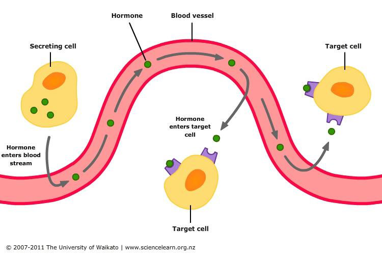
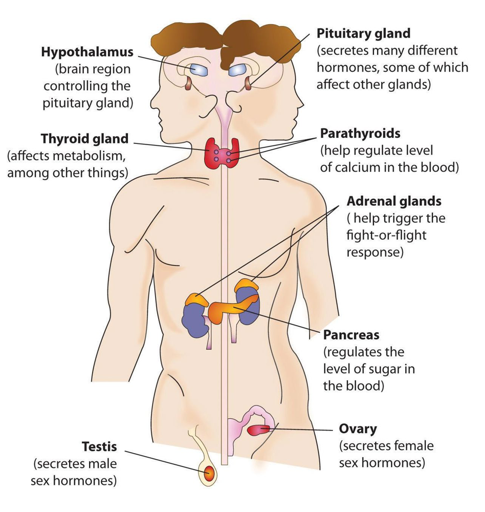
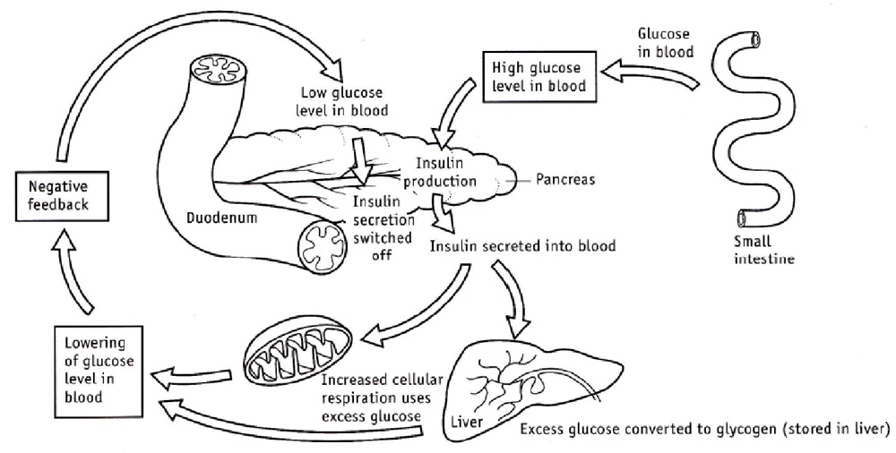
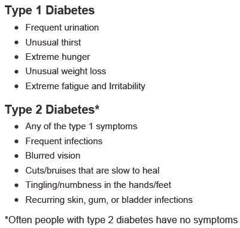
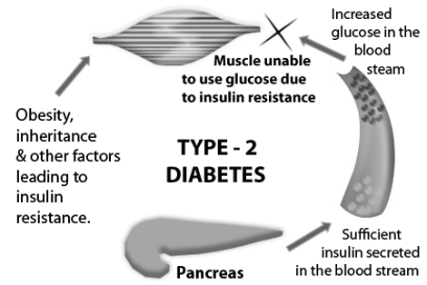
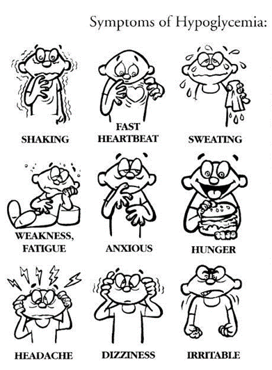

4.1 Structure of the Endocrine System
The endocrine system is a network of hormone-producing glands found all over the body. These glands are involved in homeostasis in many ways.
Hormones are released straight into the bloodstream from the gland that made them. The hormone travels all around the body, reaching every cell, but it only affects cells that have the correct receptor for that hormone.

The hormonal system is slower than the nervous system, but its effects last longer.

| Gland | Main role |
|---|---|
| Hypothalamus | Links the nervous system and the endocrine system; controls many pituitary functions |
| Pituitary gland | Controls other endocrine glands; regulates growth, reproduction and metabolism |
| Thyroid gland | Regulates the body's overall metabolic rate |
| Parathyroid glands | Regulate calcium (and phosphorus) levels in the blood |
| Thymus | Helps the immune system develop |
| Adrenal glands | Trigger the fight-or-flight response (adrenaline) |
| Pancreas | Regulates blood sugar (insulin and glucagon) |
| Ovaries / testes | Produce sex hormones |
Nervous vs endocrine system (from the slides)
| Nervous system | Endocrine system | |
|---|---|---|
| Speed of message | Fast | Slow |
| Speed of response | Immediate | Usually slow |
| Duration of response | Short | Long-lasting |
| Spread | Localised | Widespread |
| How the message travels | Electrical impulses along neurons | Hormones in the bloodstream |
Hormones reach every cell, but only cells with the matching receptor (target cells) respond.
4.2 Glucose Regulation
Cells need a continuous supply of glucose for cellular respiration. Too much glucose makes your blood thick, so it moves only slowly through your blood vessels. Too little glucose makes you feel dizzy because you don't have enough energy.
Glucose is absorbed into the blood from the digestive tract and taken up by most body cells. Despite this intake and use, blood glucose levels don't change very much, because of two hormones made by specialised cells in the pancreas:
- Insulin causes glucose to be taken up from the blood and stored in the liver (and muscles) as glycogen. This lowers blood glucose.
- Glucagon causes stored glycogen in the liver to be broken down and released as glucose. This raises blood glucose.
After eating, the pancreas releases insulin, so the liver and muscles remove glucose from the blood and store it. When glucose is used up during activity, the pancreas releases glucagon, which has the opposite effect. By controlling the release of these two hormones, blood glucose is kept fairly constant.

- Insulin and glucagon are made in the .
- After a meal, blood glucose rises and the pancreas releases .
- Insulin causes glucose to be stored in the liver as .
- During exercise, blood glucose falls and the pancreas releases .
4.3 Diabetes
Diabetes is a disease in which either the pancreas can't produce enough insulin, or the body's tissues can't respond to the insulin that is produced. There are two forms:
- Type 1 can be inherited or caused by infection: the body does not produce insulin. It can occur at any age but usually affects children and young adults. Only 10–15% of people with diabetes have Type 1.
- Type 2 is a lifestyle disease, strongly linked with high blood pressure and high cholesterol. The pancreas makes insulin, but the body's tissues are resistant to it. Overweight or obese people have extra fat around their internal organs, which releases fatty acids into the blood that interfere with the cells' uptake of insulin. Fat stored in muscle also makes muscle cells less sensitive to insulin. If cells fail to respond to insulin, blood glucose becomes abnormal, which eventually damages the pancreas until insulin production stops.
Type 2 diabetes is often controlled by diet, at least in the early stages; later, insulin must be injected. Diabetes can lead to serious complications such as blindness, cardiovascular disease, stroke, kidney failure and gangrene in the legs.



Glucose tolerance data
The table shows the blood glucose levels of two people after drinking juice containing 50 g of glucose.
| Time after drinking juice (min) | Person A (mg/100 mL) | Person B (mg/100 mL) |
|---|---|---|
| 0 | 86 | 85 |
| 15 | 110 | 125 |
| 30 | 140 | 170 |
| 45 | 115 | 190 |
| 60 | 90 | 210 |
| 75 | 80 | 210 |
| 90 | 84 | 200 |
| 105 | 85 | 180 |
| 120 | 85 | 145 |
Which person suffers from diabetes?
Person B's blood glucose rises much higher (to 210 mg/100 mL) and stays high for a long time, still not back to normal after 2 hours. Person A's glucose returns to normal within about an hour, because their insulin is working.
Rapid-acting insulin can begin to work within 1 hour. At what time should the diabetic person have taken the injection?
At, or just before, the time of drinking the juice (0 minutes). The insulin would then start working as glucose levels rise towards their peak (around 60–75 minutes), stopping the levels getting so high.
What causes the non-diabetic person's blood glucose levels to fall?
As blood glucose rises, their pancreas releases insulin. Insulin causes the liver and muscle cells to take glucose out of the blood and store it as glycogen, so blood glucose falls back to normal.
Why did the diabetic person's blood glucose levels eventually fall?
Body cells were still slowly using glucose for cellular respiration, and when blood glucose is very high, the kidneys remove some of the excess glucose in urine. (Any small amount of insulin action would also help.)
What are the target cells for insulin?
Mainly liver and muscle cells (insulin also acts on most other body cells, such as fat cells), causing them to take up glucose from the blood.
How does glucose first enter the bloodstream?
It is absorbed from the digestive system (the small intestine) into the blood after food is digested.
Why is it important that glucose is not excreted?
Glucose is the cells' main source of energy for cellular respiration. Excreting it would waste this valuable energy source.
What is the major difference between Type 1 and Type 2 diabetes?
In Type 1, the pancreas does not produce (enough) insulin. In Type 2, the pancreas produces insulin but the body's cells are resistant and don't respond to it properly.
How can you reduce your chances of developing Type 2 diabetes?
Eat a healthy diet (low in sugar and saturated fat), exercise regularly, and maintain a healthy body weight. Avoiding smoking and keeping blood pressure and cholesterol under control also help.
Endocrine system assignment
Detecting and responding to signals, in the external or internal environment, is critical for an organism's survival. In multicellular organisms, cells communicate with each other so that their behaviour is coordinated for the benefit of the whole organism.
Outline: study one hormone in detail, and describe and explain a disease that results from a malfunction of that hormone. You may work in groups and may choose or be assigned a hormone. Visit https://www.yourhormones.info/hormones/ for a list of hormones in the human body.
Present your information creatively using electronic media, for example a recorded radio interview with visuals, a simulated news segment, a talk show or game show video, a court case with the hormone on trial, or "Australia's Next Top Hormone".
Your presentation must include:
- the endocrine gland that produces the hormone and where it is located (with a diagram)
- the major functions of the hormone, its target cells and its effect on them
- how the hormone is triggered to be released and how it reaches its target cells
- definitions of hypofunction (too little hormone) and hyperfunction (too much hormone)
- the symptoms, causes and treatments of hypofunction and hyperfunction of your hormone
- a short, catchy way for your audience to remember your hormone (a visual aid, analogy, mnemonic or other memory device)
- the names of your group members and a bibliography (at least three sources).
The task is marked out of 28 against these criteria: gland name and location; functions, target cells and effect; release and transport; hypo/hyperfunction definitions; specific symptoms and causes; treatments; presentation; creativity; bibliography.